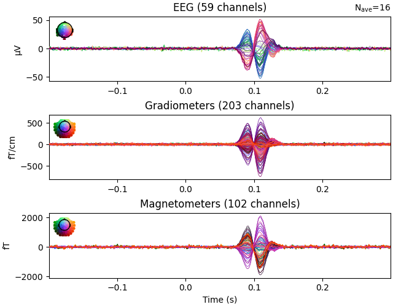

Note
Go to the end to download the full example code.
Simulate raw data using subject anatomy#
This example illustrates how to generate source estimates and simulate raw data
using subject anatomy with the mne.simulation.SourceSimulator class.
Once the raw data is simulated, generated source estimates are reconstructed
using dynamic statistical parametric mapping (dSPM) inverse operator.
# Author: Ivana Kojcic <ivana.kojcic@gmail.com>
# Eric Larson <larson.eric.d@gmail.com>
# Kostiantyn Maksymenko <kostiantyn.maksymenko@gmail.com>
# Samuel Deslauriers-Gauthier <sam.deslauriers@gmail.com>
# License: BSD-3-Clause
# Copyright the MNE-Python contributors.
import numpy as np
import mne
from mne.datasets import sample
print(__doc__)
In this example, raw data will be simulated for the sample subject, so its information needs to be loaded. This step will download the data if it not already on your machine. Subjects directory is also set so it doesn’t need to be given to functions.
data_path = sample.data_path()
subjects_dir = data_path / "subjects"
subject = "sample"
meg_path = data_path / "MEG" / subject
First, we get an info structure from the sample subject.
fname_info = meg_path / "sample_audvis_raw.fif"
info = mne.io.read_info(fname_info)
tstep = 1 / info["sfreq"]
Read a total of 3 projection items:
PCA-v1 (1 x 102) idle
PCA-v2 (1 x 102) idle
PCA-v3 (1 x 102) idle
To simulate sources, we also need a source space. It can be obtained from the forward solution of the sample subject.
Reading forward solution from /home/circleci/mne_data/MNE-sample-data/MEG/sample/sample_audvis-meg-eeg-oct-6-fwd.fif...
Reading a source space...
Computing patch statistics...
Patch information added...
Distance information added...
[done]
Reading a source space...
Computing patch statistics...
Patch information added...
Distance information added...
[done]
2 source spaces read
Desired named matrix (kind = 3523) not available
Read MEG forward solution (7498 sources, 306 channels, free orientations)
Desired named matrix (kind = 3523) not available
Read EEG forward solution (7498 sources, 60 channels, free orientations)
Forward solutions combined: MEG, EEG
Source spaces transformed to the forward solution coordinate frame
To simulate raw data, we need to define when the activity occurs using events matrix and specify the IDs of each event. Noise covariance matrix also needs to be defined. Here, both are loaded from the sample dataset, but they can also be specified by the user.
fname_event = meg_path / "sample_audvis_raw-eve.fif"
fname_cov = meg_path / "sample_audvis-cov.fif"
events = mne.read_events(fname_event)
noise_cov = mne.read_cov(fname_cov)
# Standard sample event IDs. These values will correspond to the third column
# in the events matrix.
event_id = {
"auditory/left": 1,
"auditory/right": 2,
"visual/left": 3,
"visual/right": 4,
"smiley": 5,
"button": 32,
}
# Take only a few events for speed
events = events[:80]
366 x 366 full covariance (kind = 1) found.
Read a total of 4 projection items:
PCA-v1 (1 x 102) active
PCA-v2 (1 x 102) active
PCA-v3 (1 x 102) active
Average EEG reference (1 x 60) active
In order to simulate source time courses, labels of desired active regions need to be specified for each of the 4 simulation conditions. Make a dictionary that maps conditions to activation strengths within aparc.a2009s [1] labels. In the aparc.a2009s parcellation:
‘G_temp_sup-G_T_transv’ is the label for primary auditory area
‘S_calcarine’ is the label for primary visual area
In each of the 4 conditions, only the primary area is activated. This means that during the activations of auditory areas, there are no activations in visual areas and vice versa. Moreover, for each condition, contralateral region is more active (here, 2 times more) than the ipsilateral.
activations = {
"auditory/left": [
("G_temp_sup-G_T_transv-lh", 30), # label, activation (nAm)
("G_temp_sup-G_T_transv-rh", 60),
],
"auditory/right": [
("G_temp_sup-G_T_transv-lh", 60),
("G_temp_sup-G_T_transv-rh", 30),
],
"visual/left": [("S_calcarine-lh", 30), ("S_calcarine-rh", 60)],
"visual/right": [("S_calcarine-lh", 60), ("S_calcarine-rh", 30)],
}
annot = "aparc.a2009s"
# Load the 4 necessary label names.
label_names = sorted(
set(
activation[0]
for activation_list in activations.values()
for activation in activation_list
)
)
region_names = list(activations.keys())
Create simulated source activity#
Generate source time courses for each region. In this example, we want to simulate source activity for a single condition at a time. Therefore, each evoked response will be parametrized by latency and duration.
def data_fun(times, latency, duration):
"""Generate source time courses for evoked responses."""
f = 15 # oscillating frequency, beta band [Hz]
sigma = 0.375 * duration
sinusoid = np.sin(2 * np.pi * f * (times - latency))
gf = np.exp(
-((times - latency - (sigma / 4.0) * rng.rand(1)) ** 2) / (2 * (sigma**2))
)
return 1e-9 * sinusoid * gf
Here, SourceSimulator is used, which allows to
specify where (label), what (source_time_series), and when (events) event
type will occur.
We will add data for 4 areas, each of which contains 2 labels. Since add_data method accepts 1 label per call, it will be called 2 times per area.
Evoked responses are generated such that the main component peaks at 100ms with a duration of around 30ms, which first appears in the contralateral cortex. This is followed by a response in the ipsilateral cortex with a peak about 15ms after. The amplitude of the activations will be 2 times higher in the contralateral region, as explained before.
When the activity occurs is defined using events. In this case, they are taken from the original raw data. The first column is the sample of the event, the second is not used. The third one is the event id, which is different for each of the 4 areas.
times = np.arange(150, dtype=np.float64) / info["sfreq"]
duration = 0.03
rng = np.random.RandomState(7)
source_simulator = mne.simulation.SourceSimulator(src, tstep=tstep)
for region_id, region_name in enumerate(region_names, 1):
events_tmp = events[np.where(events[:, 2] == region_id)[0], :]
for i in range(2):
label_name = activations[region_name][i][0]
label_tmp = mne.read_labels_from_annot(
subject, annot, subjects_dir=subjects_dir, regexp=label_name, verbose=False
)
label_tmp = label_tmp[0]
amplitude_tmp = activations[region_name][i][1]
if region_name.split("/")[1][0] == label_tmp.hemi[0]:
latency_tmp = 0.115
else:
latency_tmp = 0.1
wf_tmp = data_fun(times, latency_tmp, duration)
source_simulator.add_data(label_tmp, amplitude_tmp * wf_tmp, events_tmp)
# To obtain a SourceEstimate object, we need to use `get_stc()` method of
# SourceSimulator class.
stc_data = source_simulator.get_stc()
Simulate raw data#
Project the source time series to sensor space. Three types of noise will be added to the simulated raw data:
multivariate Gaussian noise obtained from the noise covariance from the sample data
blink (EOG) noise
ECG noise
The SourceSimulator can be given directly to the
simulate_raw() function.
raw_sim = mne.simulation.simulate_raw(info, source_simulator, forward=fwd)
raw_sim.set_eeg_reference(projection=True)
mne.simulation.add_noise(raw_sim, cov=noise_cov, random_state=0)
mne.simulation.add_eog(raw_sim, random_state=0)
mne.simulation.add_ecg(raw_sim, random_state=0)
# Plot original and simulated raw data.
raw_sim.plot(title="Simulated raw data")
Setting up raw simulation: 1 position, "cos2" interpolation
Event information stored on channel: STI 014
Interval 0.000–1.665 s
Setting up forward solutions
Computing gain matrix for transform #1/1
Interval 0.000–1.665 s
Interval 0.000–1.665 s
Interval 0.000–1.665 s
Interval 0.000–1.665 s
Interval 0.000–1.665 s
Interval 0.000–1.665 s
Interval 0.000–1.665 s
Interval 0.000–1.665 s
Interval 0.000–1.665 s
Interval 0.000–1.665 s
Interval 0.000–1.665 s
Interval 0.000–1.665 s
Interval 0.000–1.665 s
Interval 0.000–1.665 s
Interval 0.000–1.665 s
Interval 0.000–1.665 s
Interval 0.000–1.665 s
Interval 0.000–1.665 s
Interval 0.000–1.665 s
Interval 0.000–1.665 s
Interval 0.000–1.665 s
Interval 0.000–1.665 s
Interval 0.000–1.665 s
Interval 0.000–1.665 s
Interval 0.000–1.665 s
Interval 0.000–1.665 s
Interval 0.000–1.665 s
Interval 0.000–1.665 s
Interval 0.000–1.665 s
Interval 0.000–1.665 s
Interval 0.000–1.665 s
Interval 0.000–1.665 s
Interval 0.000–1.665 s
Interval 0.000–1.665 s
Interval 0.000–1.665 s
Interval 0.000–1.665 s
Interval 0.000–1.665 s
Interval 0.000–1.665 s
Interval 0.000–1.665 s
Interval 0.000–1.665 s
Interval 0.000–1.665 s
Interval 0.000–1.665 s
Interval 0.000–1.665 s
Interval 0.000–1.665 s
Interval 0.000–1.665 s
Interval 0.000–1.665 s
Interval 0.000–1.665 s
Interval 0.000–1.665 s
Interval 0.000–1.665 s
Interval 0.000–1.665 s
Interval 0.000–1.665 s
Interval 0.000–1.665 s
Interval 0.000–1.665 s
Interval 0.000–1.665 s
Interval 0.000–1.665 s
Interval 0.000–1.665 s
Interval 0.000–1.665 s
Interval 0.000–1.665 s
Interval 0.000–0.105 s
60 STC iterations provided
[done]
EEG channel type selected for re-referencing
Adding average EEG reference projection.
1 projection items deactivated
Average reference projection was added, but has not been applied yet. Use the apply_proj method to apply it.
Adding noise to 366/376 channels (366 channels in cov)
Sphere : origin at (0.0 0.0 0.0) mm
radius : 0.1 mm
Source location file : dict()
Assuming input in millimeters
Assuming input in MRI coordinates
Positions (in meters) and orientations
2 sources
blink simulated and trace stored on channel: EOG 061
Setting up forward solutions
Computing gain matrix for transform #1/1
Sphere : origin at (0.0 0.0 0.0) mm
radius : 0.1 mm
Source location file : dict()
Assuming input in millimeters
Assuming input in MRI coordinates
Positions (in meters) and orientations
1 sources
ecg simulated and trace not stored
Setting up forward solutions
Computing gain matrix for transform #1/1
Extract epochs and compute evoked responsses#
epochs = mne.Epochs(raw_sim, events, event_id, tmin=-0.2, tmax=0.3, baseline=(None, 0))
evoked_aud_left = epochs["auditory/left"].average()
evoked_vis_right = epochs["visual/right"].average()
# Visualize the evoked data
evoked_aud_left.plot(spatial_colors=True)
evoked_vis_right.plot(spatial_colors=True)
- 
Not setting metadata
80 matching events found
Setting baseline interval to [-0.19979521315838786, 0.0] s
Applying baseline correction (mode: mean)
Created an SSP operator (subspace dimension = 4)
4 projection items activated
Reconstruct simulated source time courses using dSPM inverse operator#
Here, source time courses for auditory and visual areas are reconstructed separately and their difference is shown. This was done merely for better visual representation of source reconstruction. As expected, when high activations appear in primary auditory areas, primary visual areas will have low activations and vice versa.
method, lambda2 = "dSPM", 1.0 / 9.0
inv = mne.minimum_norm.make_inverse_operator(epochs.info, fwd, noise_cov)
stc_aud = mne.minimum_norm.apply_inverse(evoked_aud_left, inv, lambda2, method)
stc_vis = mne.minimum_norm.apply_inverse(evoked_vis_right, inv, lambda2, method)
stc_diff = stc_aud - stc_vis
brain = stc_diff.plot(
subjects_dir=subjects_dir, initial_time=0.1, hemi="split", views=["lat", "med"]
)
Converting forward solution to surface orientation
Average patch normals will be employed in the rotation to the local surface coordinates....
Converting to surface-based source orientations...
[done]
Computing inverse operator with 364 channels.
364 out of 366 channels remain after picking
Selected 364 channels
Creating the depth weighting matrix...
203 planar channels
limit = 7262/7498 = 10.020865
scale = 2.58122e-08 exp = 0.8
Applying loose dipole orientations to surface source spaces: 0.2
Whitening the forward solution.
Created an SSP operator (subspace dimension = 4)
Computing rank from covariance with rank=None
Using tolerance 3.3e-13 (2.2e-16 eps * 305 dim * 4.8 max singular value)
Estimated rank (mag + grad): 302
MEG: rank 302 computed from 305 data channels with 3 projectors
Using tolerance 4.7e-14 (2.2e-16 eps * 59 dim * 3.6 max singular value)
Estimated rank (eeg): 58
EEG: rank 58 computed from 59 data channels with 1 projector
Setting small MEG eigenvalues to zero (without PCA)
Setting small EEG eigenvalues to zero (without PCA)
Creating the source covariance matrix
Adjusting source covariance matrix.
Computing SVD of whitened and weighted lead field matrix.
largest singular value = 5.49264
scaling factor to adjust the trace = 1.64e+19 (nchan = 364 nzero = 4)
Preparing the inverse operator for use...
Scaled noise and source covariance from nave = 1 to nave = 19
Created the regularized inverter
Created an SSP operator (subspace dimension = 4)
Created the whitener using a noise covariance matrix with rank 360 (4 small eigenvalues omitted)
Computing noise-normalization factors (dSPM)...
[done]
Applying inverse operator to "auditory/left"...
Picked 364 channels from the data
Computing inverse...
Eigenleads need to be weighted ...
Computing residual...
Explained 87.9% variance
Combining the current components...
dSPM...
[done]
Preparing the inverse operator for use...
Scaled noise and source covariance from nave = 1 to nave = 16
Created the regularized inverter
Created an SSP operator (subspace dimension = 4)
Created the whitener using a noise covariance matrix with rank 360 (4 small eigenvalues omitted)
Computing noise-normalization factors (dSPM)...
[done]
Applying inverse operator to "visual/right"...
Picked 364 channels from the data
Computing inverse...
Eigenleads need to be weighted ...
Computing residual...
Explained 90.8% variance
Combining the current components...
dSPM...
[done]
Using control points [ 3.32593086 4.92039904 48.51106599]
References#
Total running time of the script: (0 minutes 39.050 seconds)
Estimated memory usage: 869 MB